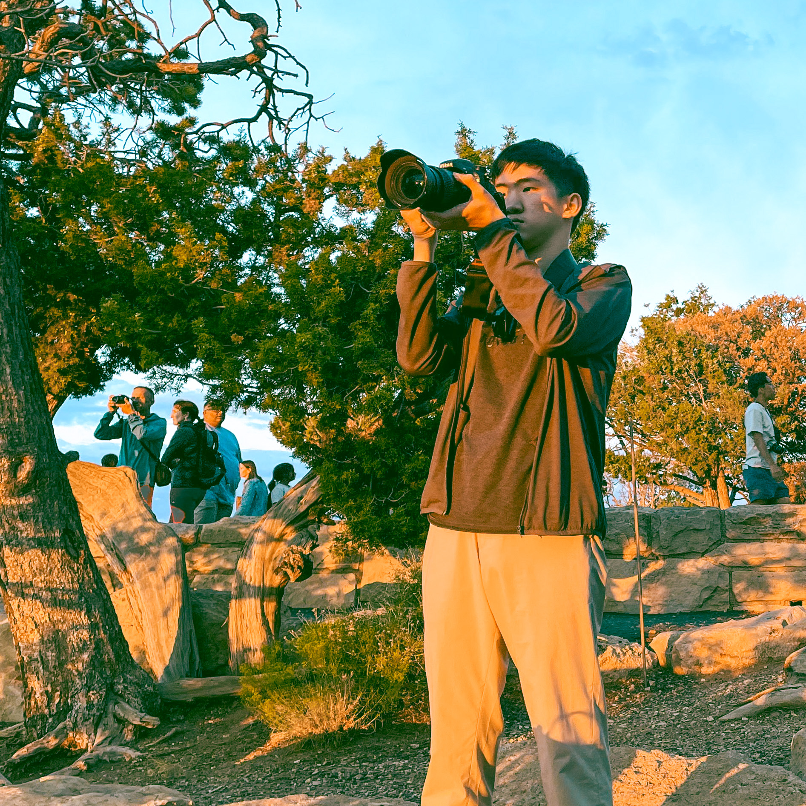

李
LEE
,
恩
EN
-齊
CHI
LEE
,
EN
-
CHI
Hello! I am a geosciences student at the University of Arizona. Despite my studies in geophysics and planetary sciences, I am interested in numerical computation, cartography, and photography.
| williameclee@arizona.edu | |
| Phone | +1 (623) 920-9079 |
| School | College of Science, University of Arizona, Tucson, Arizona |
Education |
August 2023 - Present
University of Arizona
Tucson, Arizona
Bachelor of Science in Geophysics
Bachelor of Science in Planetary Science
Minors: Mathematics & Oceanic and Atmospheric
Sciences
Expected graduation: May 2026
September 2022 - June 2023
National Taiwan University
Taipei, Taiwan
Bachelor of Science in Geosciences
Transfered to the University of Arizona
|
Selected Research Experiences & Workshops |
May 2024 - Present
Arizona Polar Ice Laboratory
University of Arizona, Arizona
Mentor: Christopher Harig, PhD
Project: Estimating Basin-Scale Ocean Mass Budgets with Satellite Gravity
July 2023 - August 2023
Dynamics and Modelling Laboratory
National Centre of Theoretical Sciences, Taiwan
Mentor: Hung-Chi Kuo, PhD
Project: Potential Vorticity Invertibility for Boundary Layer in Hadley Circulation
June 2022 - September 2022
IRIS Seismology Skill Building Workshop
Incorporated Research Institutions for Seismology (online)
Mar 2020 - Jan 2022
Institute of Earth Sciences
Academia Sinica, Taipei, Taiwan
Mentor: Wen-Tzong Liang, PhD
Project: Exploring Low-Frequency Seismic Events |
Publications |
October 2024
Investigating the Variance of GIA Corrections on Gravimetric Basin-Scale Ocean Mass Budgets (abstract, submitted)
Washington, D.C.
AGU24 Fall Meeting
August 2024
Estimating Basin-Scale Ocean Mass Budgets with Satellite Gravity (abstract)
University of Arizona, Arizona
Undergraduate Research Opportunities Consortium’s 2024 Abstract Review
|
Presentations |
September 2024
Estimating Basin-Scale Ocean Mass Budgets with Satellite Gravity (talk)
University of New Mexico, New Mexico
McNair Scholar Research Conference
August 2024
Estimating Basin-Scale Ocean Mass Budgets with Satellite Gravity (talk & poster)
University of Arizona, Arizona
Undergraduate Research Opportunities Consortium Colloquium
|
Honours & Distinctions |
2023 - now
Transfer Global Wildcat Award
University of Arizona, Arizona
December 2022 & June 2023
Presidental Award
National Taiwan University, Taiwan
September 2022 & Feburary 2023
Fu Bell Scholarship
National Taiwan University, Taiwan
August 2021
International Earth Science Olympiad
International Geoscience Education Organisation (online)
Gold medallist and ranked second in the world
|
In the News |
December 2022
National Education Radio
Taiwan
August 2021
Ministry of Education
Taichung, Taiwan
|
Last updated on September 15, 2024. For the full CV, please click here.